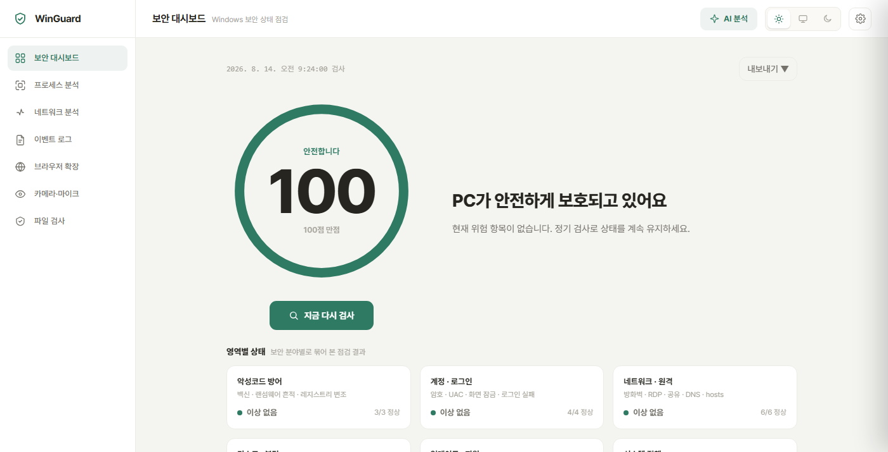
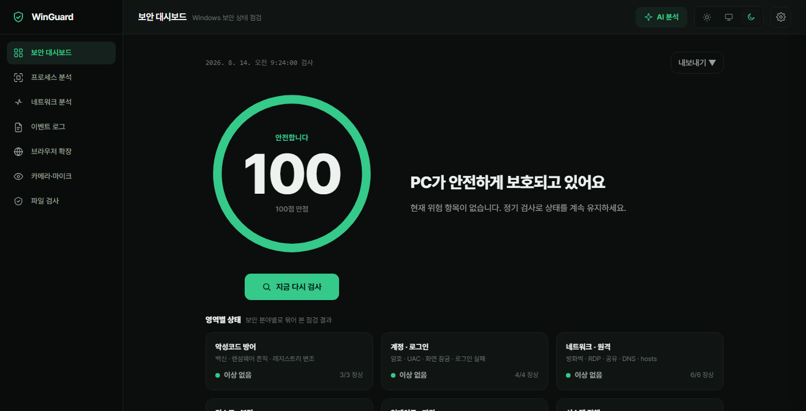

23종 상시 보안 점검
Defender · 방화벽 · BitLocker · UAC · Secure Boot · TPM 같은 기본 설정과, DNS 하이재킹 · 랜섬웨어 흔적 · 레지스트리 변조 같은 침해 징후를 함께 점검합니다.
WinGuard가 내 PC를 지키는 방법
Defender · 방화벽 · BitLocker · UAC · Secure Boot · TPM 같은 기본 설정과, DNS 하이재킹 · 랜섬웨어 흔적 · 레지스트리 변조 같은 침해 징후를 함께 점검합니다.
점검 결과를 가중치로 환산해 원형 게이지로 보여줍니다. 항목마다 무엇이 문제인지와 조치 방법이 함께 붙습니다.
Google Gemma 4 E2B 로컬 LLM 이 점검 결과를 해석합니다. 추론이 전부 기기 안에서 이뤄져 분석 대상 데이터가 외부로 나가지 않습니다.
실행 중인 프로세스, 활성 네트워크 연결, 보안 이벤트 로그, 설치된 브라우저 확장 프로그램을 각각 살펴볼 수 있습니다.
앱별로 카메라와 마이크 접근 권한을 확인하고, 원치 않는 프로그램의 접근을 차단할 수 있습니다.
의심스러운 파일의 해시를 조회하거나 직접 업로드해 검사합니다. 레지스트리를 바꾸는 조치는 원래 값을 먼저 백업하고, 실패하면 조치를 중단합니다.
Google Gemma 4 E2B 온디바이스 AI 가 로그와 이벤트를 기기 내부에서 직접 추론합니다. 외부와의 통신은 VirusTotal 파일 검사, AI 모델 내려받기, 업데이트 확인, 지원 종료일 조회 네 가지에 한정되며, 범위와 전송 항목은 개인정보 처리방침에 모두 공개해두었습니다.
어떤 환경에서도 눈에 편안한 대시보드

